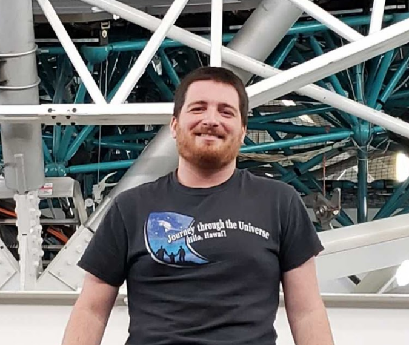
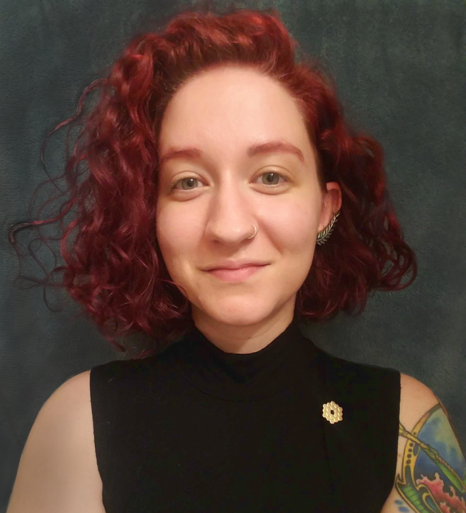
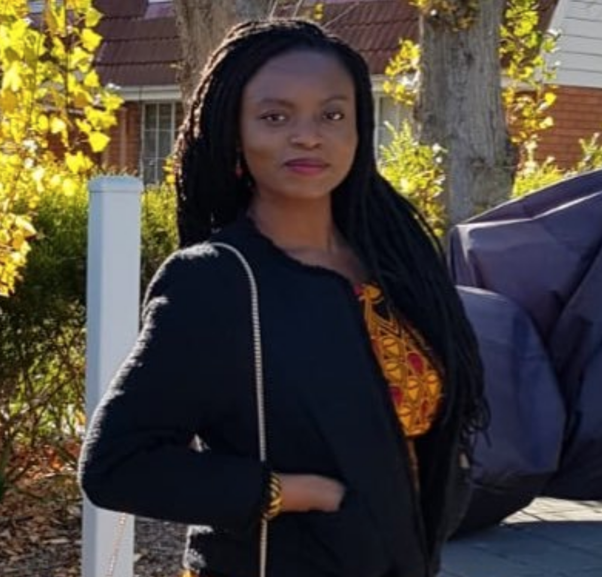
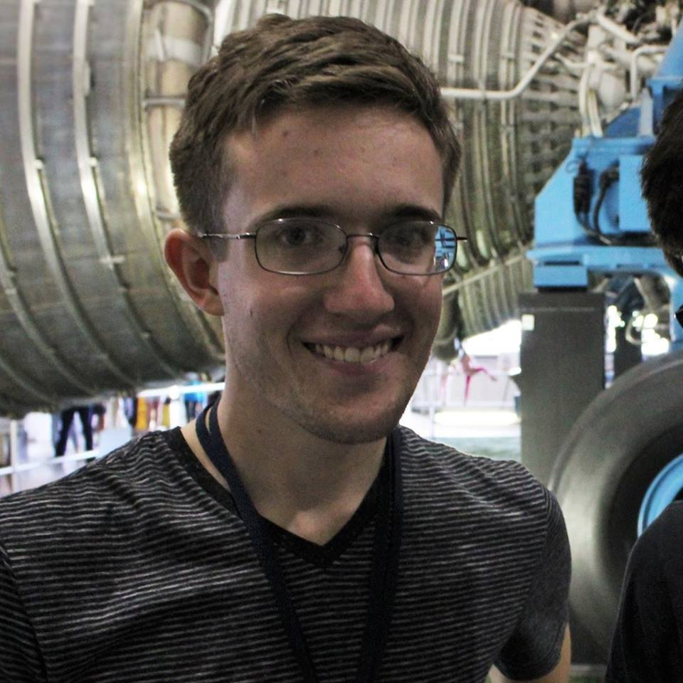
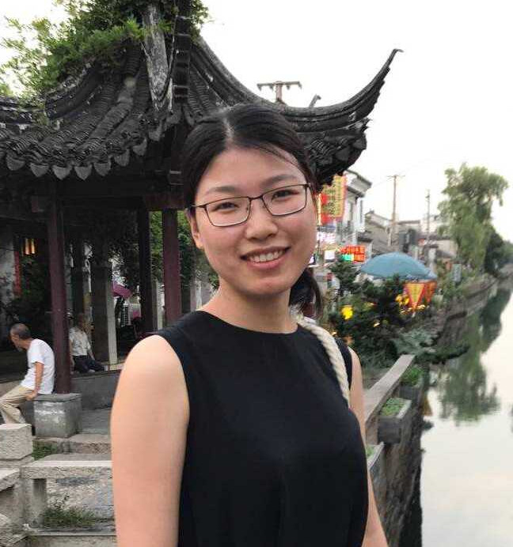
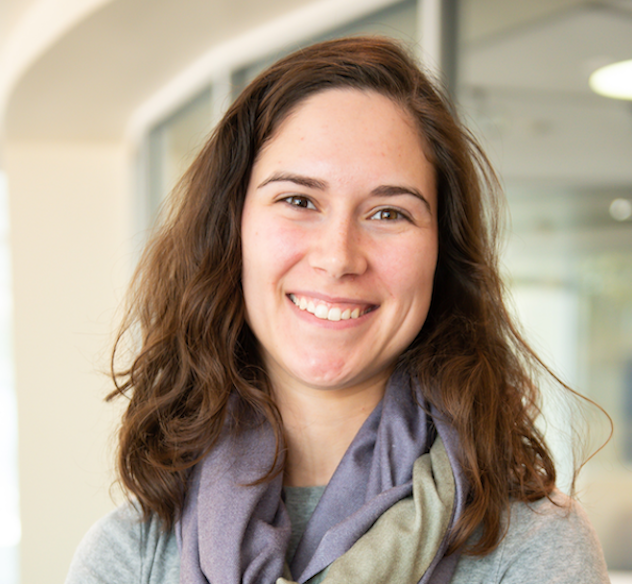
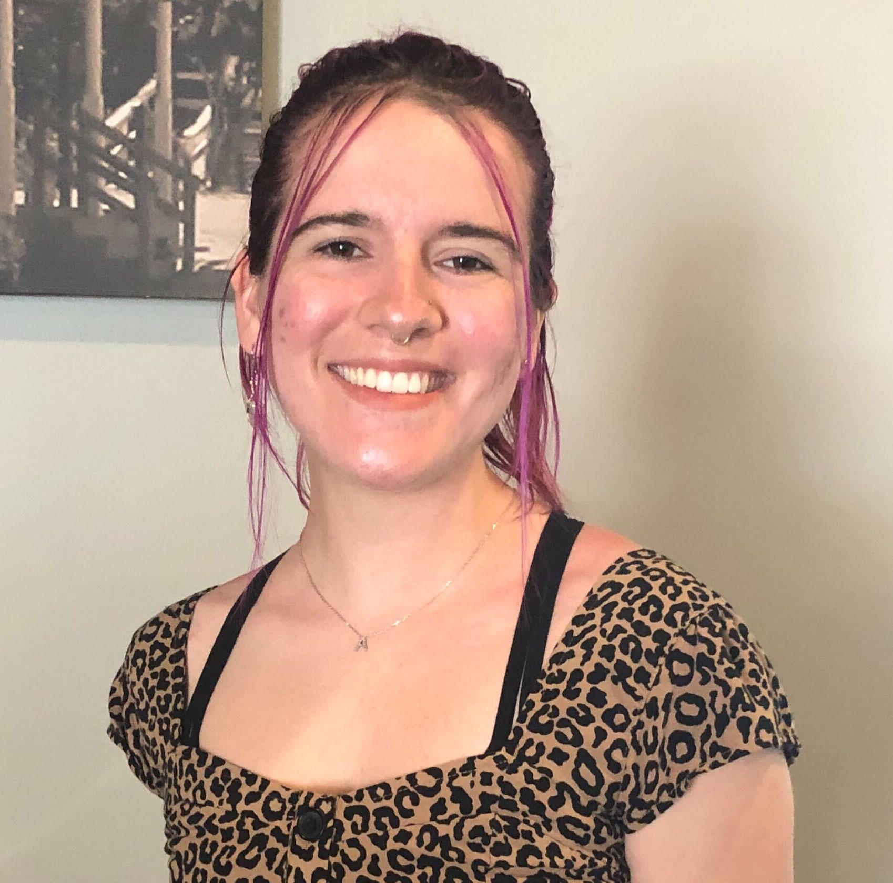

Astronomy Graduate Students
If you have any questions, feel free to contact our current graduate student representative, Jonathan Cohn (joncohn@tamu.edu).
2015 class
Vince Estrada-Carpenter
Vince Estrada-Carpenter (he/him) is an astronomy graduate working with Casey Papovich. He studies the evolution and formation of massive quiescent galaxies in the early universe using slitless spectroscopy from the Hubble Space Telescope. In his free time, Vince likes to run, cook, and spend time with his family. To learn more about Vince, check out his website: vince-ec.github.io
2016 class
Sarah Cantu
 Sarah Cantu (she/her) is an astronomy graduate student working with Louis Strigari. She studies ultra-faint dwarf galaxies in the local group. In her free time, Sarah likes to read and cook.
Sarah Cantu (she/her) is an astronomy graduate student working with Louis Strigari. She studies ultra-faint dwarf galaxies in the local group. In her free time, Sarah likes to read and cook.
Jonathan Cohn
Jonathan Cohn (he/she/they) is an astronomy graduate student working with Jonelle Walsh. He studies supermassive black holes and the relationships between black hole masses and host galaxy properties. In his free time, Jonathan enjoys reading, creative writing, listening to lots of music, playing tabletop games and RPGs, and running around outside. To learn more about Jon, check out his website: jhcohn.github.io
Peter Ferguson
Peter Ferguson (he/him) is an astronomy graduate studying Milky Way substructure/dark matter with Jennifer Marshall and Louis Strigari, and instrumentation with Darren DePoy. In particular, he works on finding/characterizing stellar streams to learn about the Milky Way and dark matter properties. In his free time, Peter likes to play ultimate frisbee and listening to entirely too much music. To learn more about Peter, check out his website: peterferguson.space
Taylor Hutchison
Taylor Hutchison (she/her) is an astronomy graduate student working with Casey Papovich. She studies NIR spectroscopy of high-redshift galaxies (think z>5). In her free time, Taylor loves crafting, playing her cello, and taking pictures of her cute cats. To learn more about Taylor, check out her website: aibhleog.github.io
2017 class
Jacqueline Antwi-Danso
 Jacqueline Antwi-Danso (she/her) is an international student from Ghana and astronomy graduate student working with Casey Papovich. She uses medium-band NIR photometry to improve the photometric redshift solutions of quiescent galaxies at z > 3. In her spare time, she loves to learn about interior decor, watch & discuss movies (big Marvel fan), and co-hosts a podcast on intentional living and reachable mentorship.
Tarini Konchady
Tarini Konchady (she/her) is an astronomy graduate student working with Lucas Macri. She studies Mira and Cepheid variables and how they can be used to establish the extragalactic distance scale. In her free time, Tarini likes to crochet, knit, read, and rewatch Parks and Recreation. You can learn more about Tarini at her website: tkonchady.github.io
Alex Riley
Alex Riley (he/him) is an astronomy graduate student working with Louis Strigari. He studies the dynamics of Milky Way satellites and stellar streams to learn about dark matter and galaxy formation. In his free time, Alex likes to read books, binge TV shows, cook vegan dinners, and play video games and tabletop RPGs. You can learn more about Alex at his website: ahriley.github.io
Jiawen Yang
Jiawen Yang (she/her) is an astronomy graduate student working with Dr. Lifan Wang and Dr. Nicholas Suntzeff. She studies Type Ia Supernovae (SNe Ia), in particular photometric and spectroscopic difference in between super-luminous SNe Ia and normal SNe Ia. In her spare time, Jiawen enjoys reading books, cooking Chinese food and baking, and also loves watching anime as well as playing anime theme songs on the piano.
2018 class
Yaswant Devarakonda
 Yaswant Devarakonda (he/his) is an astronomy graduate student working with Peter Brown and Nicholas Suntzeff, studying the UV properties of Type Ia Supernovae. You’ll often find him procrastinating by playing video games and tabletop RPGs, sending snapchats of his dog, and rewatching the Fast and Furious movies. Check him out here: yaswantd.github.io
Yaswant Devarakonda (he/his) is an astronomy graduate student working with Peter Brown and Nicholas Suntzeff, studying the UV properties of Type Ia Supernovae. You’ll often find him procrastinating by playing video games and tabletop RPGs, sending snapchats of his dog, and rewatching the Fast and Furious movies. Check him out here: yaswantd.github.io
Lauren Aldoroty
Lauren (she/they) is an astronomy graduate student working with Lifan Wang and Nicholas Suntzeff. She studies the CMAGIC method for calibrating Type Ia Supernovae, incorporating functional principal component analysis. Lauren loves ponies, spicy food, and the color purple. In her free time, she rock climbs and obsesses over perfecting the vegan macaron. To learn more about Lauren, go to laldoroty.github.io
Claire Qi
 [summary]
[summary]
2019 class
Addy Evans
Addy Evans (she/her) is an astronomy graduate working with Louis Strigari studying the indirect detection and particle nature of dark matter. In her free time, Addy likes to read books, play video games, code, and hang out with her partner and their cat, Paimon. To learn more about Addy, check out her website: celestialadele.github.io
Xingzhuo Chen (Gesa)
[summary]
Silvana Delgado Andrade
Silvana Delgado Andrade (she/her/hers) is an astronomy graduate student working with Jonelle Walsh where she studies the most massive nearby galaxies and how they evolve with their supermassive black hole. Silvana really enjoys traveling to new places and spending time outdoors. Some of her favorite activities are rock climbing, playing the ukulele, and going on longboard rides with her dog, Cleo!
Micalyn Rowe
 Micalyn Rowe (she/her) is an astronomy graduate student working with Dr. Peter Brown and Dr. Nicholas Suntzeff. She studies Core-Collapse Supernovae in the UV. In her free time, Mica likes to read books, spend time outdoors with Heath (human partner) and Beans (doggie), watch interesting TV, photograph special moments, travel, and expand my horizons. To learn more about Mica, check out her website: tx.ag/mdrowe!
Micalyn Rowe (she/her) is an astronomy graduate student working with Dr. Peter Brown and Dr. Nicholas Suntzeff. She studies Core-Collapse Supernovae in the UV. In her free time, Mica likes to read books, spend time outdoors with Heath (human partner) and Beans (doggie), watch interesting TV, photograph special moments, travel, and expand my horizons. To learn more about Mica, check out her website: tx.ag/mdrowe!
2020 class
Justin Cole
 Justin is an astronomy graduate studying the evolution of massive galaxies in the early Universe. In his free time, Justin likes to play soccer and video games, and enjoys botany in all its forms. To learn more about Justin, check out his website: jwc68.github.io/justin_cole/
Justin is an astronomy graduate studying the evolution of massive galaxies in the early Universe. In his free time, Justin likes to play soccer and video games, and enjoys botany in all its forms. To learn more about Justin, check out his website: jwc68.github.io/justin_cole/
Joanne Tan
 Joanne Tan (she/her) is an astronomy graduate student working with Jonelle Walsh and Guang Yang, studying low-mass galaxies hosting AGNs. During her meager free time (because procrastination always takes up the most time), Joanne can be found playing video games, lurking on Reddit, and watching Netflix. She also loves cooking and watches tons of food videos for new ideas/inspiration. Dogs are one of her biggest loves so she is always happy when someone sends her pictures/videos of doggos!
Joanne Tan (she/her) is an astronomy graduate student working with Jonelle Walsh and Guang Yang, studying low-mass galaxies hosting AGNs. During her meager free time (because procrastination always takes up the most time), Joanne can be found playing video games, lurking on Reddit, and watching Netflix. She also loves cooking and watches tons of food videos for new ideas/inspiration. Dogs are one of her biggest loves so she is always happy when someone sends her pictures/videos of doggos!
Kaitlin Webber
 Kaitlin Webber (she/her) is an astronomy graduate student working with Jennifer Marshall. She works on abundance analysis of ultra-faint dwarf galaxies. In her free time, Kaitlin likes to do triathlons, bake, and read.
Kaitlin Webber (she/her) is an astronomy graduate student working with Jennifer Marshall. She works on abundance analysis of ultra-faint dwarf galaxies. In her free time, Kaitlin likes to do triathlons, bake, and read.
2021 class
Mary Anne Limbach
Mary Anne Limbach (she/her) is an astronomy graduate student working for Darren DePoy. Her research interests are exploring new techniques for exomoon and exoplanet detection and characterization. In her free time, Mary Anne likes rock climbing, backpacking and gardening. To learn more about Mary Anne, check out her website: maryannelimback/home